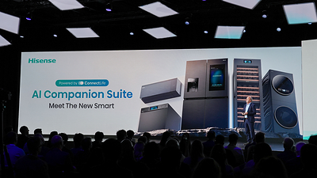
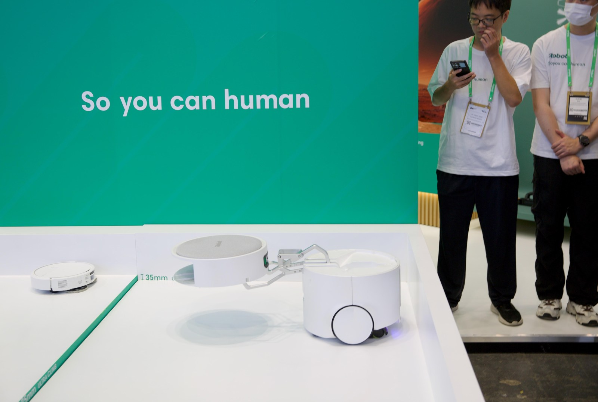
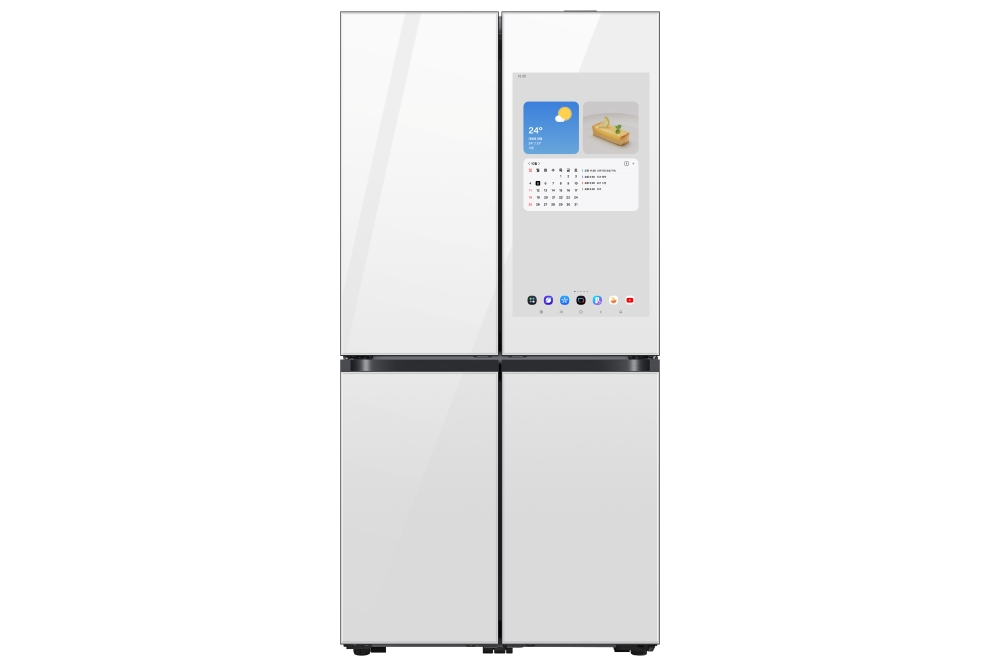

1
厨房智能硬件 / 大模型算法 / 竞品动态
Hisense 发布 AI Companion Suite：厨房开始按食材、口味和设备协同出菜
Hisense 在 IFA 2026 展示 V AIOS 与 AI Companion Suite，把 AI 能力落到 Cooking、Laundry、Air & Energy 三类日常场景。厨房部分强调识别个人饮食偏好、现有食材和环境上下文，并协同冰箱、烤箱等设备给出菜品建议与烹饪引导。

配图：Hisense IFA 2026 发布现场，画面中包含 AI Companion Suite 与多类家电硬件。图片评分：82/100。
这条新闻对智能厨房的启发比较直接：AI 不再只是语音入口，而是把“冰箱里有什么、家人爱吃什么、烤箱能做什么”组合起来，给用户一个可执行的晚餐方案。
如果这类能力继续成熟，厨房系统的竞争点会从单机参数转到跨设备编排：冰箱负责食材认知，烤箱负责烹饪执行，屏幕或语音入口负责解释和确认，最终形成一条完整任务链。
小编有话说厨房 AI 最值得跟踪的是“上下文”。谁能把食材、偏好、设备能力和时间约束连起来，谁就更接近真正有用的厨房智能体。
2
具身智能 / 用户趋势 / 厨房品类创新
iRobot Roomba Duo 亮相：一台家务机器人开始携带另一台机器人
The Verge 9 月 4 日报道，iRobot 在 IFA 2026 展示 Roomba Duo 概念机：主机负责大面积洗地和清扫，还能通过机械臂放下更小的 Roomba，进入桌底、边角等狭窄空间完成补充清洁。

配图：The Verge 拍摄的 Roomba Duo 现场实机照片，设备结构和机械臂清晰可见。图片评分：91/100。
Roomba Duo 的产品逻辑很有意思：它没有追求人形机器人，而是把“母舰 + 子机”的协作关系放进地面清洁任务里，让不同尺寸的机器人分别处理不同空间。
对未来厨房和家庭清洁来说，这种形态比单一全能机器人更现实。厨房地面、餐桌下方、柜体边角和开放式客餐厨区域，本来就是多尺度、多障碍的复杂空间。
小编有话说家务机器人未必先做人形。更可落地的方向，可能是多个专用硬件围绕家庭空间协作，把一个任务拆成更稳定的执行单元。
3
厨房工业设计 / 设计趋势 / 厨房空间设计
Samsung IFA 获奖家电：AI 冰箱把视觉识别和极窄嵌入缝隙放到同一张牌上
Samsung 9 月 4 日宣布多款家电获得 IFA Innovation Awards 2026 荣誉，其中 Bespoke AI Refrigerator Family Hub 强调 32 英寸屏、食材管理、联网厨房能力与内部摄像头识别；另一款 Bespoke AI Refrigerator 强调每侧 4mm 的安装缝隙。

配图：Samsung 官方 Bespoke AI Refrigerator Family Hub 产品图，突出厨房屏幕入口与冰箱形态。图片评分：78/100。
这条新闻的重点，是 AI 功能和工业设计正在合并表达：一边用内部摄像头识别食材、推荐食谱，一边把冰箱做得更适合嵌入式厨房空间。
对高端厨电来说，未来的“智能感”不一定外露。用户更容易感知的是空间更齐平、操作更少、食材管理更省心，AI 变成隐藏在产品体验背后的能力。
小编有话说AI 厨电的下一步不是把屏幕越做越大，而是让识别、推荐、开门和空间适配一起服务于少打扰、低学习成本的厨房体验。